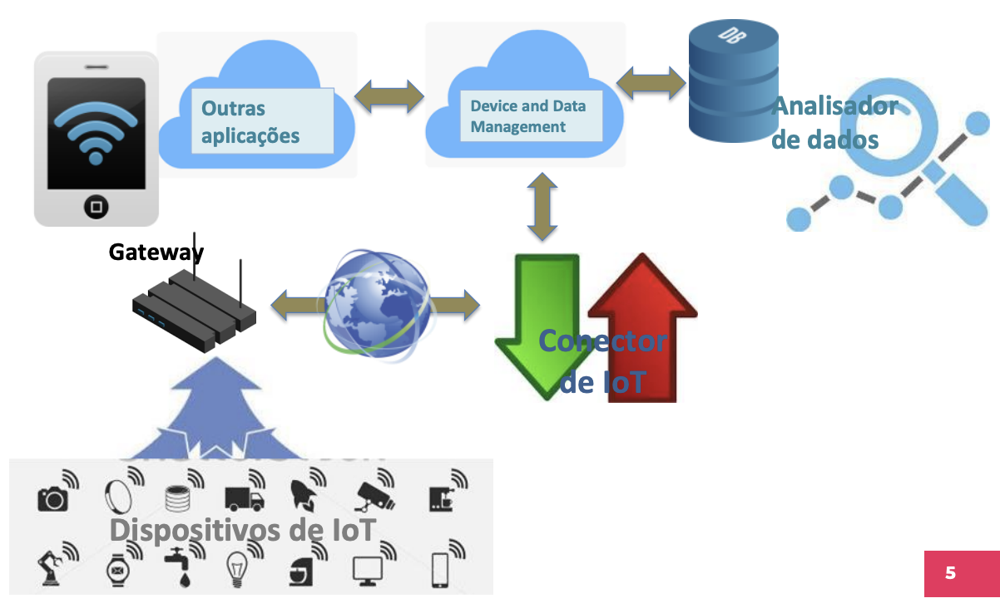
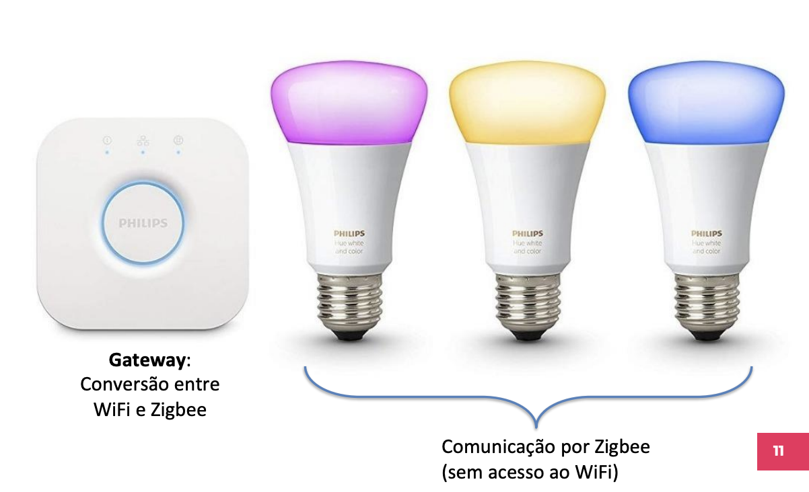
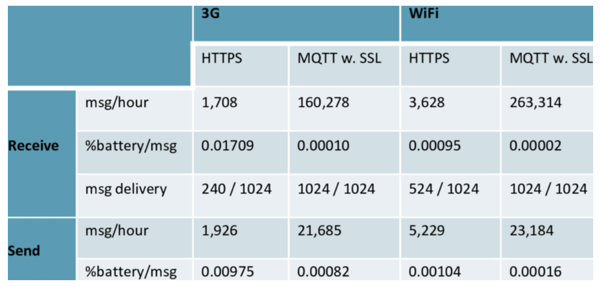
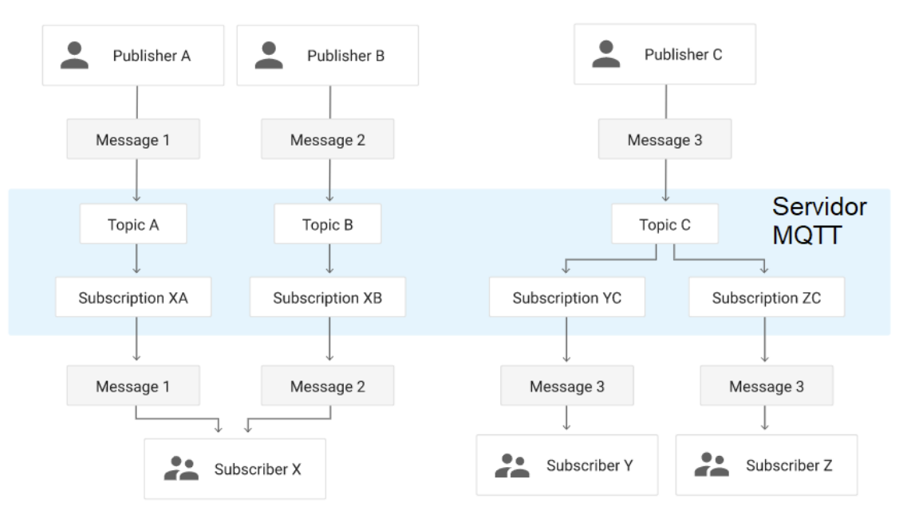
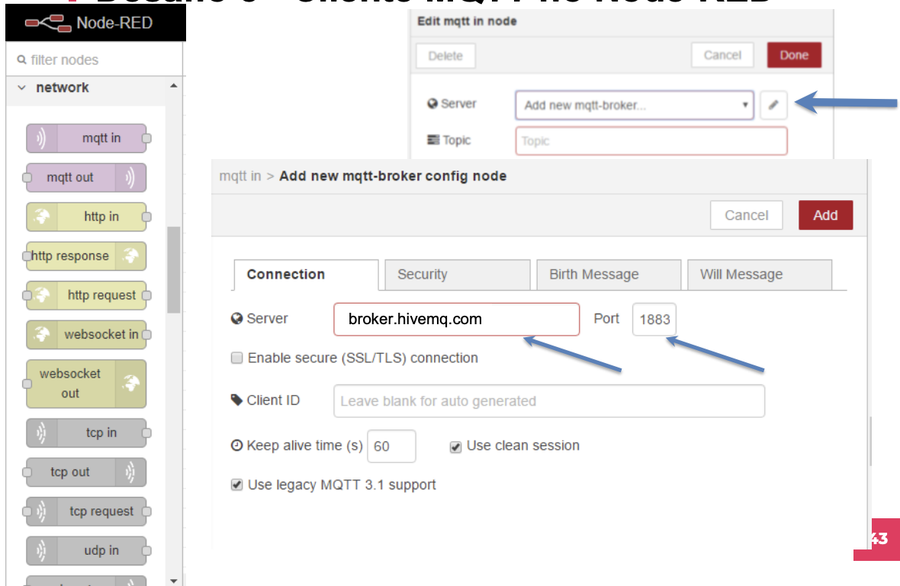
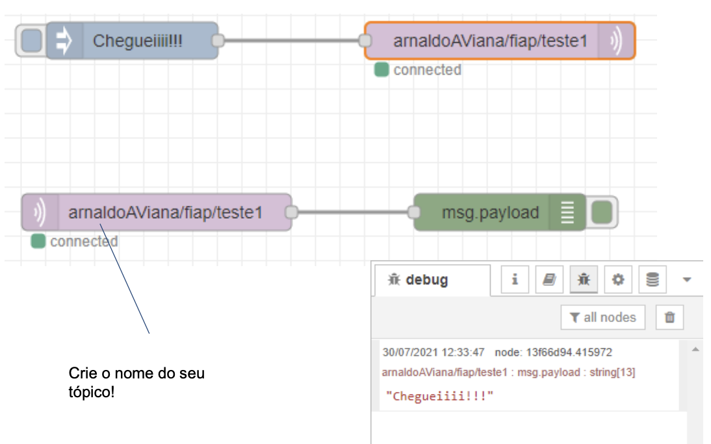

Neste Laboratório vamos trabalhar com Node-red e conhecer o protocolo MQTT.
- arquivo pdf do laboratório: laboratório5
Introdução à IoT¶
Agenda¶
- Instalação do Node-RED e primeiros testes
- Montagem de um dashboard no Node-RED
- Criação de um end-point
- Apresentação do MQTT
Conectando dispositivos a aplicações¶
Agora que já exploramos as funcionalidades do Arduino e sua capacidade de conectar sensores e atuadores, vamos prosseguir conectando o Arduino a aplicações que fazem uso desse dispositivo.
Em primeiro lugar, vamos relembrar a arquitetura que usaremos para os dispositivos de IoT se conectarem às suas aplicações.
Arquitetura básica de IoT¶
A arquitetura de implantação apresentada aqui é um modelo padrão para inspirar projetos reais. Ela inclui os elementos fundamentais para a conectividade, sem detalhar soluções para problemas acessórios.

- Interoperabilidade: facilita a compatibilidade entre diferentes projetos de IoT.
- Modularidade: define módulos que podem ser criados separadamente ou usados como "off-the-shelf".
Dispositivos de IoT¶
Os dispositivos de IoT interagem com o ambiente ao seu redor, capturando dados de sensores ou executando comandos por meio de atuadores.
- Cada funcionalidade no dispositivo pode ser considerada uma aplicação (Endpoint Application).
- Cada aplicação deve ser univocamente endereçável.
Conector de IoT¶
Os conectores de IoT gerenciam mensagens que chegam dos dispositivos ou são destinadas a eles, adaptando-as ao protocolo de cada dispositivo.
- Pode haver conectores diferentes para protocolos variados.
- Protocolos comuns em IoT: MQTT, WebSocket, CoAP, LoRaWAN.
Gerenciamento de dispositivos e dados¶
Este componente faz o gerenciamento remoto dos dispositivos e de seus dados, autorizando o acesso de outras aplicações.
- Cadastra novos dispositivos e aplicações.
- Monitora a disponibilidade dos dispositivos.
- Envia comandos de gerenciamento, como inicialização, reinicialização, desligamento e atualização de firmware.
Bancos de dados e análise de dados¶
Armazena dados provenientes das aplicações e comandos destinados aos dispositivos.
- Bancos de dados NoSQL são mais indicados para a IoT devido à natureza diversificada e em constante mudança dos dados.
- Analisadores de dados monitoram os dados para melhor aproveitamento.
Gateway¶
O gateway conecta dispositivos sem acesso direto à internet e realiza a conversão de protocolos entre os dispositivos de IoT e o conector de IoT.

- Gerencia múltiplos protocolos, especialmente em LAN’s, PAN’s e HAN’s (ex: Zigbee, Bluetooth, LoRa, Thread/6LoWPAN).
Node-RED¶
O Node-RED é uma plataforma de programação visual para sistemas baseados em eventos. Ele executa como um servidor web e é amplamente utilizado para conectar dispositivos de IoT.
- Programado em Node.js, é uma ferramenta visual para editar fluxos de mensagens.
- Disponível em serviços de Cloud como o IBM Bluemix.
Instalação do Node-RED¶
- Instale o Node.js (versão LTS) no site Node.js.
- No terminal, digite:
- Para rodar o Node-RED:
- Acesse no navegador: http://localhost:1880
Primeiro fluxo no Node-RED¶
- Conecte um nó de entrada do tipo "inject" a um nó "debug", faça o deploy e observe o resultado no painel de debug.
- Modifique o nó "inject" e veja as alterações no resultado.

Desafios no Node-RED¶
Desafio 1: Monitor de clima¶
- Cadastre-se no site OpenWeather, crie um token e leia a documentação da API Current.
- Crie uma URL para obter o tempo de uma cidade de sua preferência e compare o resultado com a saída no Node-RED.

Desafio 2: Dashboard¶
Crie um dashboard que exiba informações de duas ou mais cidades, incluindo: - Temperatura atual - Temperatura mínima - Temperatura máxima - Velocidade do vento - Umidade relativa - Sensação térmica
Atualize os dados a cada 3 ou 5 segundos.
MQTT (Message Queuing Telemetry Transport)¶
O MQTT é um protocolo de comunicação leve projetado especificamente para dispositivos com recursos limitados, como sensores e atuadores, e cenários de redes com alta latência e baixa largura de banda. Sua simplicidade e baixo overhead o tornam ideal para a Internet das Coisas (IoT).

Características principais do MQTT:¶
- Modelo Publish/Subscribe: O MQTT usa um modelo de comunicação assíncrono, onde os clientes se inscrevem (subscribe) em tópicos específicos para receber mensagens e publicam (publish) mensagens nesses tópicos para serem recebidas por outros clientes.
- Broker: O broker é o servidor central que gerencia as mensagens publicadas e as distribui para os clientes inscritos em tópicos específicos.
- Qualidade de Serviço (QoS): O MQTT oferece três níveis de QoS que controlam a entrega das mensagens, garantindo diferentes níveis de confiabilidade:
- QoS 0 - At most once: A mensagem é entregue no máximo uma vez, sem confirmação de recebimento. Risco de perda de mensagem.
- QoS 1 - At least once: A mensagem é entregue ao menos uma vez. Há confirmação de recebimento, mas pode ocorrer duplicação de mensagens.
-
QoS 2 - Exactly once: A mensagem é entregue exatamente uma vez, garantindo a entrega sem duplicação ou perda, porém com maior overhead.
-
Retained Messages: Uma mensagem publicada pode ser marcada como "retida", o que significa que o broker armazenará essa última mensagem publicada no tópico e enviará imediatamente aos novos clientes que se inscreverem no tópico, mesmo após a publicação original.
- Last Will and Testament (LWT): O LWT é uma mensagem que o broker envia automaticamente caso um cliente MQTT se desconecte inesperadamente, notificando os outros clientes da rede sobre a falha.

Funcionamento do MQTT:¶
- Publicação de Mensagens: Um cliente publica uma mensagem em um tópico específico no broker.
- Inscrição em Tópicos: Outros clientes se inscrevem em tópicos de interesse e, quando uma mensagem é publicada nesses tópicos, o broker a entrega aos inscritos.
- Filtragem por Tópicos: O MQTT utiliza hierarquias de tópicos, permitindo o uso de caracteres coringa para subscrição:
- +: Corresponde a um único nível de um tópico. Exemplo:
sala/+/temperaturase inscreve em todos os sensores de temperatura de diferentes salas. - #: Corresponde a todos os níveis subsequentes do tópico. Exemplo:
sala/#se inscreve em todos os tópicos que começam com "sala".
Exemplos de Brokers MQTT:¶
- Brokers Públicos:
- iot.eclipse.org
- test.mosquitto.org
- dev.rabbitmq.com
- broker.mqttdashboard.com
Desafio 3: Cliente MQTT no Node-RED¶
No Node-RED, um fluxo pode ser criado para simular um chat entre dois ou mais clientes MQTT. Para isso, deve-se configurar tópicos que sigam boas práticas de nomeação, como camelCase, e criar dois nós principais:
- Node MQTT In: Subscreva-se a um tópico específico e receba mensagens publicadas nesse tópico.
- Node MQTT Out: Publique mensagens em um tópico que os outros clientes estão escutando.

Exemplo de configuração:
- Tópico de envio:
arnaldoAVianaJr/chat/mensagem - Para receber mensagens, crie um nó que se inscreva em: arnaldoAVianaJr/#.

Tip
Esse fluxo de comunicação pode ser testado em um ambiente local ou em um dos brokers públicos mencionados anteriormente.